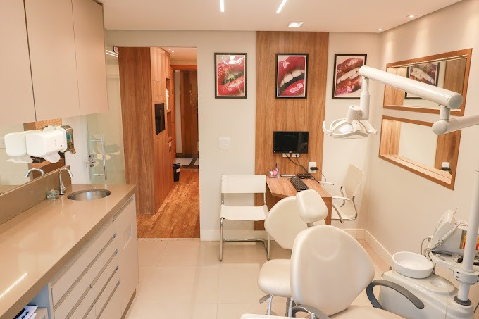

.png)
SOBRE NÓS:
A Clínica SmileClinic é um centro especializado em odontologia, comprometido em fornecer cuidados dentários de alta qualidade em um ambiente acolhedor e confortável. Com uma equipe de profissionais altamente qualificados e equipamentos modernos, a clínica oferece uma ampla gama de serviços odontológicos, incluindo limpeza e prevenção, restaurações, tratamento de canal, implantes dentários, ortodontia e estética dental. Seu foco está não apenas na saúde bucal, mas também na satisfação e bem-estar dos pacientes, proporcionando um atendimento personalizado e eficiente para atender às necessidades individuais de cada pessoa.
SOBRE A CLÍNICA:
A Clínica Sversutti Odonto é um espaço dedicado ao cuidado e tratamento odontológico de alta qualidade, comprometido em proporcionar aos pacientes uma experiência excepcional em saúde bucal. Com uma equipe de profissionais altamente qualificados e apaixonados pelo que fazem, a clínica se destaca pelo seu atendimento personalizado e pela busca contínua pela excelência em todas as áreas da odontologia.
Localizada em um ambiente acolhedor e moderno, a Clínica Sversutti Odonto oferece uma ampla gama de serviços odontológicos, desde procedimentos preventivos até tratamentos avançados de reabilitação oral e estética dental. Seja para cuidados básicos de higiene bucal, como limpeza e profilaxia, ou para procedimentos mais complexos, como implantes dentários, ortodontia e próteses, a clínica está equipada com tecnologia de ponta e utiliza as técnicas mais atualizadas para garantir resultados excepcionais e duradouros.
Além da expertise clínica, a Clínica Sversutti Odonto se destaca pelo seu compromisso com o conforto e bem-estar dos pacientes. Desde o momento em que entram na clínica, os pacientes são recebidos com atenção e cuidado, e todo o processo de tratamento é conduzido de forma transparente, com foco na educação e na participação ativa do paciente em seu próprio cuidado odontológico.
Com uma abordagem holística da saúde bucal, a Clínica Sversutti Odonto não apenas trata os problemas dentários existentes, mas também se dedica a educar os pacientes sobre a importância da prevenção e da manutenção da saúde bucal a longo prazo. Acreditando que um sorriso saudável é essencial para o bem-estar geral, a clínica está empenhada em ajudar cada paciente a alcançar e manter a melhor saúde bucal possível, proporcionando não apenas tratamentos de alta qualidade, mas também suporte e orientação contínuos ao longo do tempo.

A higiene bucal é crucial para a saúde geral do corpo, não apenas para manter os dentes limpos, mas também para prevenir doenças bucais e sistêmicas. Escovar os dentes, usar fio dental e enxaguante bucal regularmente ajuda a prevenir cáries e doenças gengivais, além de reduzir o risco de doenças como diabetes e doenças cardíacas. Uma boca saudável não só preserva os dentes naturais, mas também melhora a qualidade de vida, autoestima e evita custos elevados com tratamentos corretivos. Em resumo, a higiene bucal é essencial para uma vida saudável e econômica..
HORARIOS DE ATENDIMENTO
| Seriços | Segunda a Sexta | Sábados | Feriados |
|---|---|---|---|
| IMPLANTES E PRÓTESES | 08h - 17h | 08h - 14h | --------- |
| CLAREAMENTO | 08h - 17h | 08h - 14h | 08h - 14h |
| ORTODONTIA | 08h - 17h | 08h - 14h | 08h - 14h |
| REMOÇÃO DE ''SISO'' | 08h - 17h | --------- | --------- |
DADOS PARA CONTATO: